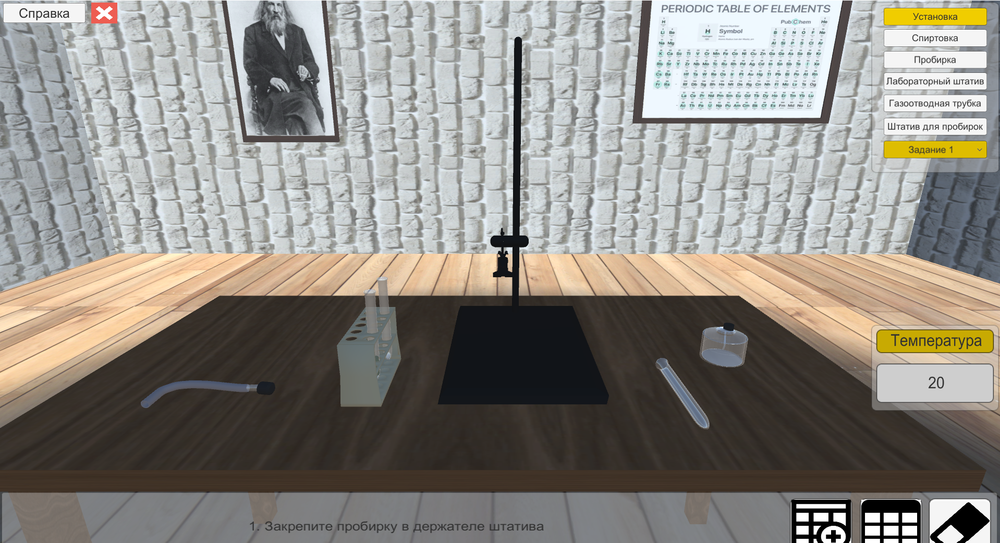
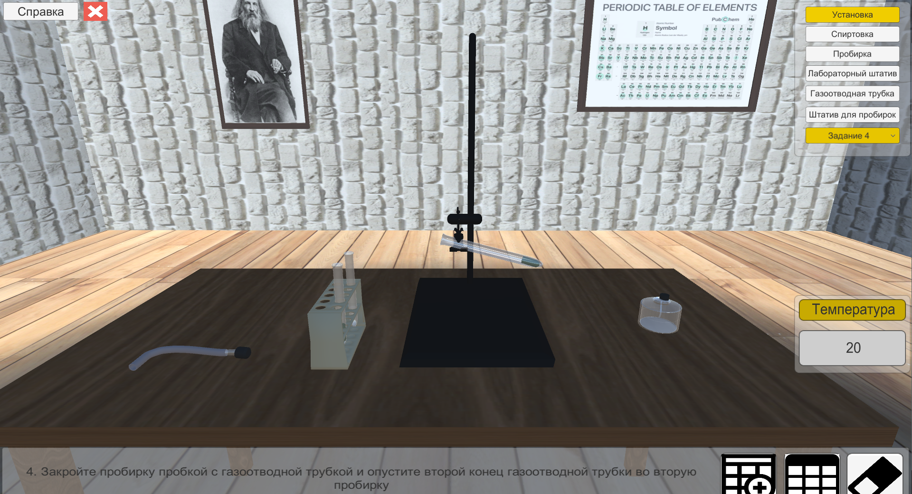
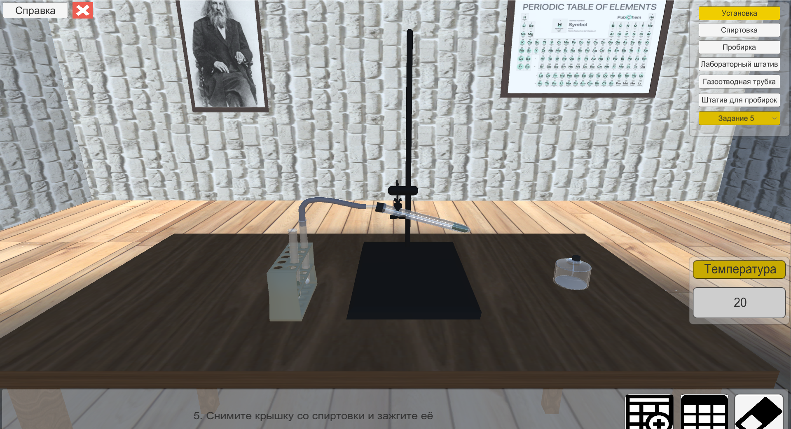
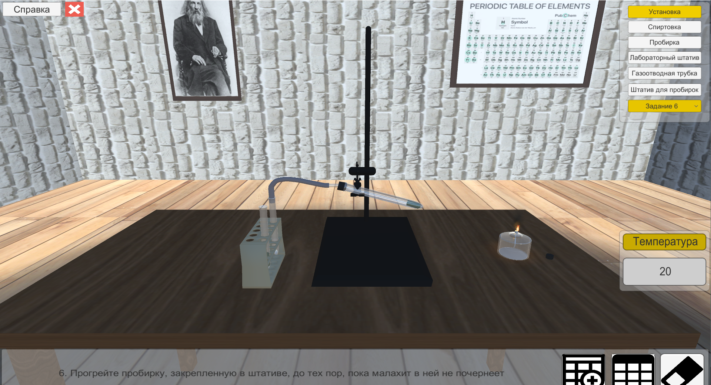
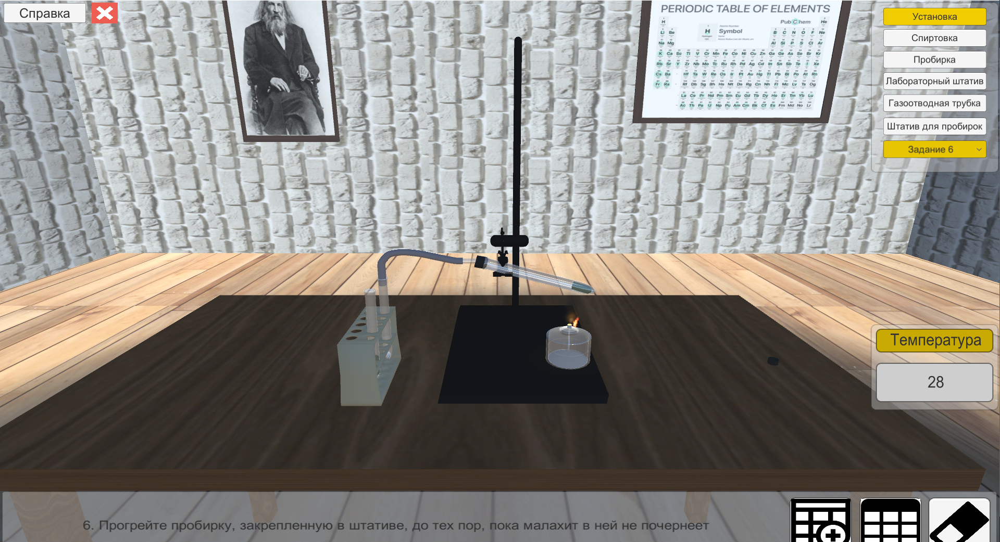
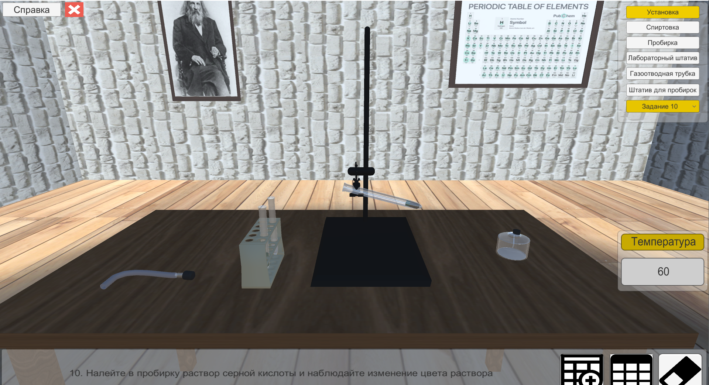
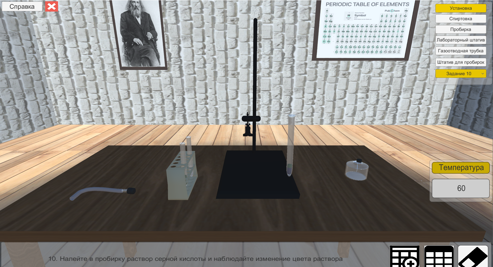

Задание 1. Зафиксировать пробирку в лабораторном штативе
Задание 2. Засыпать в пробирку порошок малахита
Задание 3. Налить во вторую пробирку, находящуюся в штативе для
пробирок, известковую воду

Задание 4. Закрыть пробирку пробкой с газоотводной трубкой

Задание 5. Снять крушку со спиртовки и зажечь ее

Задание 6. Прогреть пробирку в штативе до потемнения малахита в ней

Задание 7. Занести температуру в таблицу
Задание 8. Отсоединить пробку с газоотводной трубкой
Задание 9. Потушить спиртовку и закрыть ее крышкой

Задание 10. Налить в пробирку раствор серной кислоты

Наблюдается изменение цвета раствора на синий